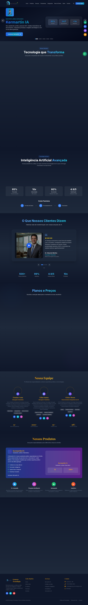

Case Study
Genesys
Plataforma de dados com foco em performance, escalabilidade e ingestão eficiente.
Status
Em evolução
Stack
Python, TypeScript, C++
Foco
Ingestão e consulta rápida
Preview

Problema
Pipelines de dados lentos e pouco confiáveis comprometem análises e sistemas que dependem de baixa latência.
Solução
Arquitetura modular que combina ingestão assíncrona, cache e otimizações de consulta para alta performance.
Arquitetura
Ingestão → Processamento assíncrono → Camada de cache → API de consulta
Fontes de dados
↓
Ingestão assíncrona
↓
Normalização/ETL
↓
Cache + indexação
↓
API de consulta
↓
Ingestão assíncrona
↓
Normalização/ETL
↓
Cache + indexação
↓
API de consulta
Decisões técnicas
Separação clara de responsabilidades entre ingestão e leitura, com cache para reduzir custo computacional.
Resultado
Pipeline mais previsível e pronto para aplicações com alto volume de dados.